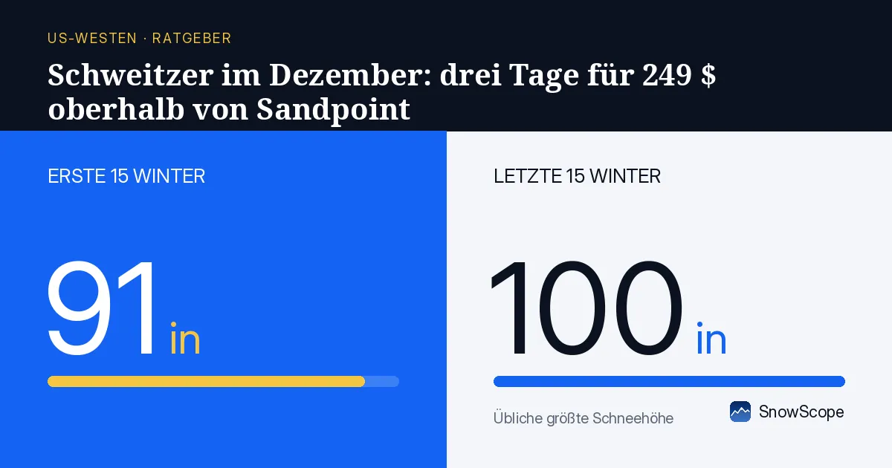

Schweitzer im Dezember: drei Tage für 249 $ oberhalb von Sandpoint
Schweitzer ist ein großer Berg mit einer Kleinstadt-Basis: Sandpoint und der Lake Pend Oreille unten, ein langer Grat aus Liften oben. Für einen Dezembertrip bringt der 3-Pack für 249 $ für die Saison 2026/2027 ein Resort-Wochenende fast auf das Budget eines kleinen Hügels.
Die Live-Schneeprognose für Schweitzer Mountain Resort in der SnowScope-AppSchneehöhen, Pulverschnee-Alarme und 3D-Karte, gratis.
Vom See zum Grat
Auf unserer Karte hat Schweitzer 10 Lifte und rund 46 mi (74 km) Pisten, von etwa 4.010 ft (1.221 m) bis hinauf zu 6.390 ft (1.949 m). Diese Höhenspanne erklärt seinen Dezember: Basis und Gipfel erleben den größten Teil des Monats unterschiedliche Winter.

Der 3-Pack, einfach erklärt
Der 3-Pack gibt drei Skitage für 249 $ und gilt nur für die Saison 2026/2027. Das Resort selbst gibt das mit 83 $ pro Tag an. Einen vollen Tages-Schalterpreis konnten wir auf der Website nicht finden, daher vergleichen wir mit dem Pack statt mit einem Einzelticket.
Drei Tage passen auch zum Schnee: Man muss nicht alles auf einen einzigen Dezembertermin setzen.

Eine große Lücke zwischen unten und oben
An einem typischen 15. Dezember hat die Basis 22 in (55 cm), die Bergmitte bei etwa 5.200 ft (1.585 m) 35 in (90 cm), und der Gipfel 54 in (138 cm). Zum Weihnachtstag erreicht der Gipfel 60 in (152 cm) und die Bergmitte 43 in (109 cm).
Die Chancen auf der Bergmitte sind stark: 85 % der Winter hatten am 15. Dezember 20 in (50 cm) oder mehr, und 98 % bis zum 25. Dezember. Der Anteil guter Schneewochen dort wächst von 72 % in der ersten Dezemberwoche auf 98 % in der Weihnachtswoche. Dauerhafter Schnee erreicht die Bergmitte typischerweise Anfang November, später als bei den Gebieten in den Rockies.
Im Vergleich zu Lookout Pass und Brundage
Lookout Pass, östlich an der I-90 an der Grenze zu Montana, verlangt 63 $ unter der Woche mit Reservierung und hatte 30 in (75 cm) auf der Bergmitte an einem typischen 15. Dezember. Brundage, weit südlich bei McCall, startet dynamische Tickets an ausgewählten Tagen bei 65 $ und hatte 30 in (77 cm).
Schweitzer kostet pro Tag mehr als deren günstigste Tickets, hat aber von den drei Gebieten den tiefsten Schnee oben am Berg und viel mehr Gelände.
Damals und heute, und der letzte Winter
Die Bergmitte hatte in den ersten 15 Wintern unserer Aufzeichnung an einem typischen 15. Dezember 41 in (104 cm), und jeder Winter lag über 20 in; in den letzten 15 Wintern waren es 32 in (80 cm) und 73 %. Der letzte Winter war an diesem Datum sehr mager, mit 6 in (16 cm) auf der Bergmitte. Ein Drei-Tage-Pack erlaubt es, auf die richtigen Tage zu warten.
Tipps für Skifahrer
- Kaufen Sie den 3-Pack vor der Reise und verteilen Sie die Tage über die zweite Dezemberhälfte.
- Die Bergstraße von Sandpoint ist steil: Ketten mitnehmen oder Winterreifen nutzen.
- Fahren Sie Anfang Dezember zu den oberen Liften hoch: Die Basis kann dünn sein.
- Nebel und tiefe Wolken sind hier häufig: eine Brille mit Schwachlicht-Glas hilft.
Quellen und Nachweise
- Schweitzer, lift ticket 3-Pack 2026/2027 (official) www.schweitzer.com/plan-your-trip/deals-and-packages/lift-ticket-3pack
- Lookout Pass, lift tickets 2026-2027 (official) skilookout.com/lift-tickets/
- Brundage Mountain, daily lift tickets (official) brundage.com/daily-lift-tickets/
- OpenSkiMap (mapped lifts and runs) openskimap.org/
- avalanche.org, US avalanche centers and forecasts avalanche.org/
Zu diesen Zahlen
Schneewerte: SnowScope-Schneehistorie, 46 vergangene Winter (1980-81 bis 2025-26) auf den angegebenen Höhen (Tal, Mitte, Gipfel), eine höhenkorrigierte Rekonstruktion des früheren Schnees für eine Fläche (auf Basis von ERA5-Land; Snow_Hydro 1 km für Marokko), keine Meldungen des Skigebiets. Aktueller Schnee: die SnowScope-Schneekarte. Lifte, Pisten und Höhen: OpenSkiMap-Kartierung. Preise: die unten genannten offiziellen Seiten, gelesen am 13. November 2026; dynamische Preise ändern sich mit Datum und Nachfrage.
Offizielle Lawinenlageberichte: avalanche.org (US national portal)
Diesen Bericht zitieren
Für Forschung, Lehre oder Presse: Zahlen und Grafiken sind unter CC BY 4.0 mit dieser Quellenangabe frei nutzbar.
SnowScope (2026), Schweitzer im Dezember: drei Tage für 249 $ oberhalb von Sandpoint, https://snowscope.app/blog/de/2026/11/schweitzer-sandpoint-december-3-pack-deal.html, abgerufen am 2026-11-14
SnowScope (Atlas Labs). (2026, November 14). Schweitzer im Dezember: drei Tage für 249 $ oberhalb von Sandpoint. SnowScope snow reports. https://snowscope.app/blog/de/2026/11/schweitzer-sandpoint-december-3-pack-deal.html
BibTeX
@misc{snowscope2026schweitzersandpointdecem,
author = {{SnowScope (Atlas Labs)}},
title = {Schweitzer im Dezember: drei Tage für 249 $ oberhalb von Sandpoint},
year = {2026},
month = nov,
howpublished = {\url{https://snowscope.app/blog/de/2026/11/schweitzer-sandpoint-december-3-pack-deal.html}},
note = {Published 2026-11-14 20:57 UTC; accessed 2026-11-14}
}· CC BY 4.0 · Methoden, Daten und Werkzeuge →
Schweitzer Mountain Resort: Schnee und Temperatur nach Höhe, dieser Winter vs letzter (Werkzeuge) →
Schweitzer Mountain Resort folgen
Gratis: eine Nachricht, wenn Neuschnee kommt, und jeden Morgen die Vorhersage.